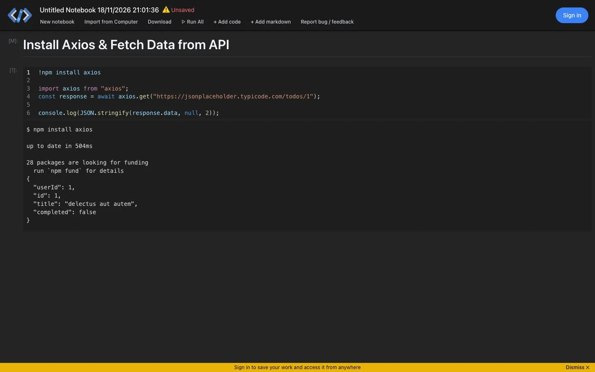

TypeScript Notebook
Run TypeScript in the browser.
A notebook for writing and running TypeScript cells in the browser. It is for trying code quickly without setting up a project.
Visit typescriptnotebook.com
Design decisions
- Opens straight into a working notebook with a sample cell, no landing page in front of it.
- Dark editor-style UI in Inter, with a simple toolbar: New notebook, Import, Download, Run All, Add code, Add markdown.
- Cells carry execution counters like [1] and markdown cells are marked [M], echoing Jupyter.
- Output appears directly under the cell, including npm install logs and printed JSON, so the result sits next to the code.
- A yellow banner asks visitors to sign in to save, and a blue Sign in button sits top right.
On a phone

TypeScript Notebook has a single theme, so there is one set of captures.
The flow, step by step
Further down the page
